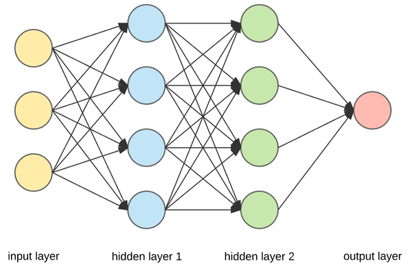

Sur cette page, vous retrouverez le contenu de ma veille technologique sur le sujet Exploration par curiosité dans le reinforcement learning.
L'apprentissage par renforcement est une forme de machine learning. Il sera d'abord présenté une rapide introduction au machine learning, puis on s'intéressera au fonctionnement de l'apprentissage par renforcement pour enfin traiter de la curiosité dans ce cadre.
Le machine learning est l'ensemble des algorithmes et modèles statistiques utilisés afin qu’un ordinateur puisse réaliser une tâche spécifique basés non pas sur des instructions préalables mais plutôt sur des schémas et déductions statistiques [1].
On peut ainsi le décomposer en 3 approches distinctes :
Les algorithmes étudiés lors de cette veille s'appuient très largement sur des réseaux de neurones.

Il s'agit d'algorithmes cherchant à s'inspirer du fonctionnement de cerveau humain pour prendre des décisions. Ils se composent ainsi de couches successives de neurones reliés entre eux par des poids. Ainsi l'état d'un neurones est transmis aux neurones suivant via des liens optimisables.